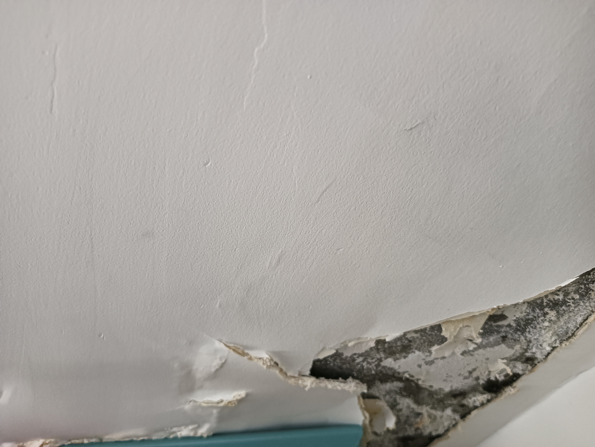
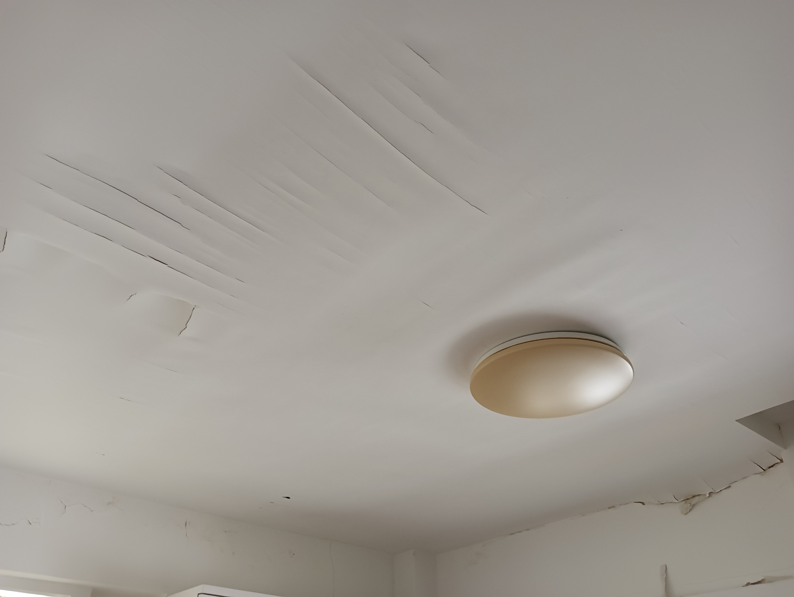
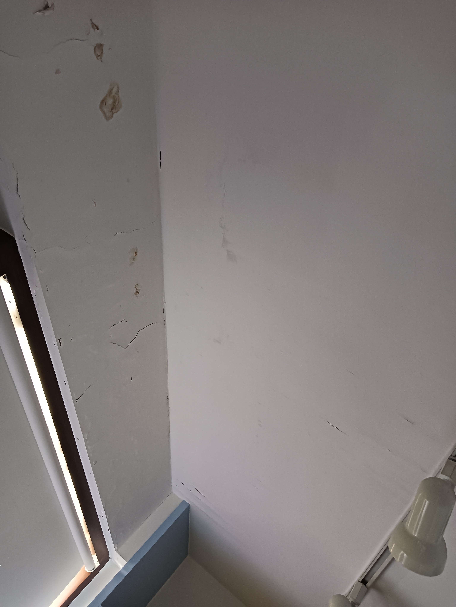
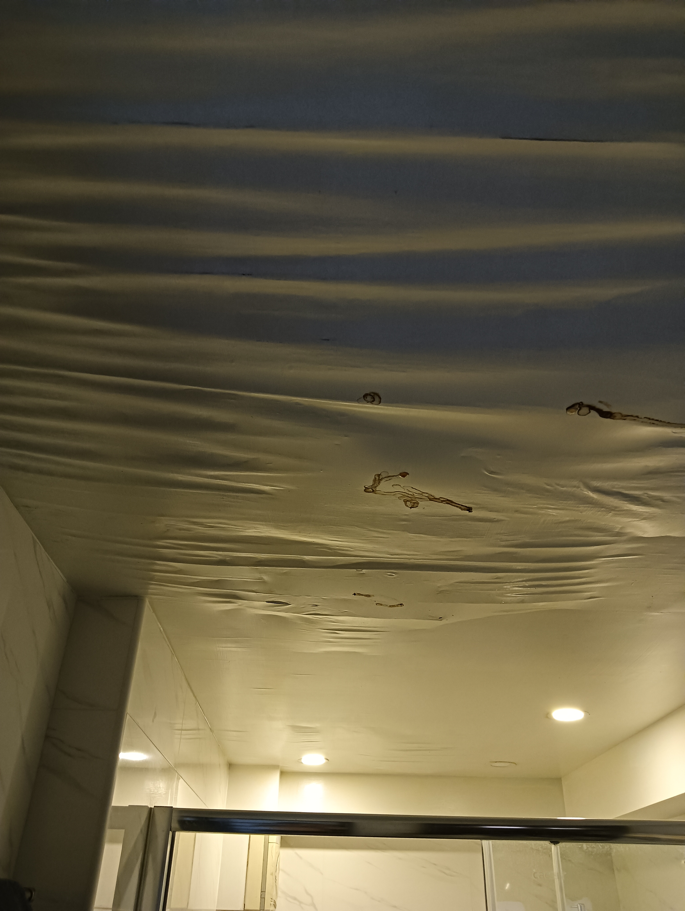
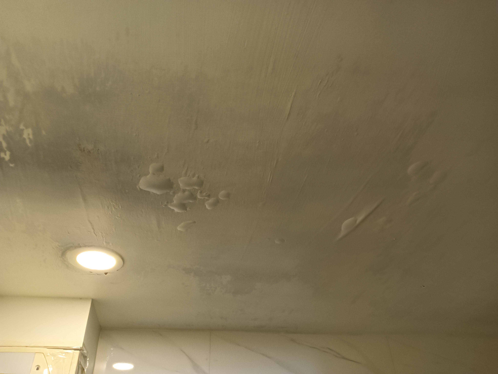
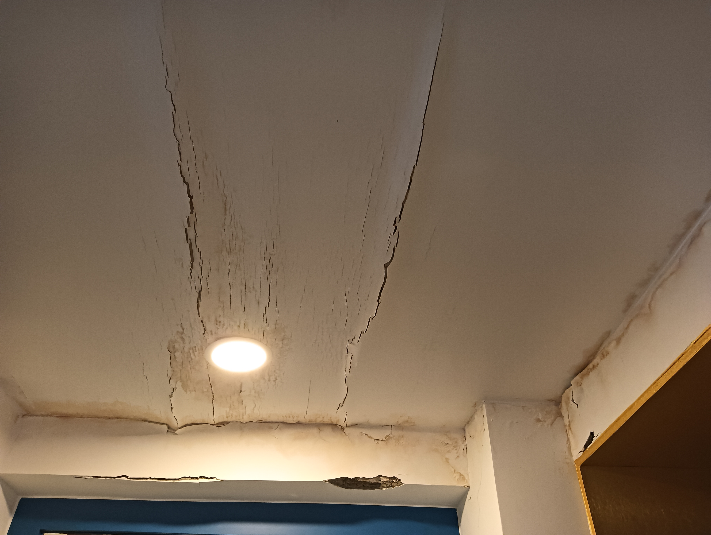
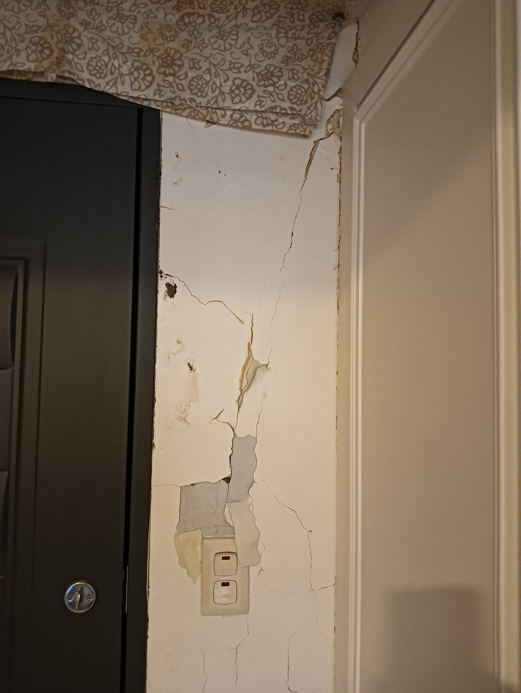
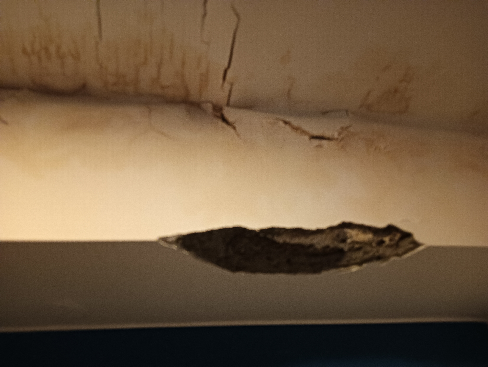

[ Email: jones1661@gmail.com TEL: 0928506785 ]
各位親愛的住戶，您好：
我是一位長期飽受頂樓公共區域滲漏水無侵蝕與摧殘的住戶。長期的滲漏已導致我家霉味瀰漫、天花板及室內裝修嚴重受損，甚至已對個人健康構成風險。我曾自費更換抽水馬達多次，面對大樓、頂樓及會議室因防水缺陷，導致水份持續滲入建築結構的嚴峻事實，我個人本著守護共同家園及自保的善意，及在管委會不作為主動自費採取措施減緩滲漏，力求保護大樓整體結構，並避免自家遭受進一步損害。這樣的做法卻反而遭，目前管委會以存證信函 回覆當作其中一項不做修繕的理由。
希望藉此公告，不僅是陳述本戶的困境，更是要與各位共同檢視：我們繳納的管理費，是否被以一個公開、透明、且符合全體住戶利益的程序所使用？
本人已多次向管委會反映家中因頂樓滲漏所造成的損害，並曾多次正式發出存證信函，請求管委會履行《公寓大廈管理條例》中對於共用部分修繕之責任。然而，截至今日，儘管我已屢次奔走陳情，這場漏水噩夢卻仍未獲得任何實質解決，只能眼睜睜看著家園持續毀損。屋內漏水狀況照片。
圖：卧室1天花板損壞霉味瀰漫
圖：卧室梁柱漏水
圖：浴室2天花板損壞
圖：工作室天花板損壞霉味瀰漫
圖：浴室1天花板損壞霉味瀰漫
圖：浴室1天花板損壞霉味瀰漫
圖：玄關天花板損壞霉味瀰漫
圖：玄關牆壁油漆剝落
圖：玄關梁柱水泥剝落
管委會近期對本人提起的管理費訴訟，其程序或許有其依據。本人暫停繳費，實為及管理費遭超收且多次反映漏水問題未果後，為敦促問題解決的正式抗議手段。然而，我們需要反思的是：事情為何會走到對簿公堂這一步？
自本人反映漏水問題以來，管委會從未有任何代表當面與我接洽，從未出面共同討論漏水狀況與解決方案，而是直接以存證信函，全面否認我家漏水，並要求我直接提起訴訟。
一個最初能以修繕解決的問題，卻因管委會一開始就拒絕溝通與處理，執意將住戶推向司法途徑，如今才演變成一場昂貴的訴訟。但這場官司的律師費用，以及本人未來若依法提出包含財產與精神損害的更高額賠償，最終都可能需要由全體住戶的管理費來共同承擔。
我要嚴肅提醒各位住戶：這場訴訟的代價，將由全體住戶共同承擔。即使我在一審敗訴，我亦將依法提起上訴，這意味著管委會將至少兩次動用管理費支付律師費，而我家的漏水問題，卻可能依然持續無解。
更令人不解的是：大樓是大家所共同擁有的資產，管理費也是全體住戶辛苦繳納的血汗錢。如此重大的訴訟決定，是否僅由少數一兩人就能輕率決定其方向與處理方式，而未經充分、透明的討論？這份管理費的運用權力，是否應該經過大家的了解而做決定？
我們真正應該問的是：一個更完善、更透明的陳情與修繕處理機制，是否就能避免今天的對立，以及未來潛在的巨大財務損失？
在此，我並非意圖製造對立，而是誠摯地提出具體行動方案，邀請大家共同守護我們的社區：
守護我們共同的家園，不能再坐視問題惡化、資源耗損！現在，就是我們站出來，要求程序正義與透明治理的時刻。
—— 一位關心社區未來的住戶 敬上